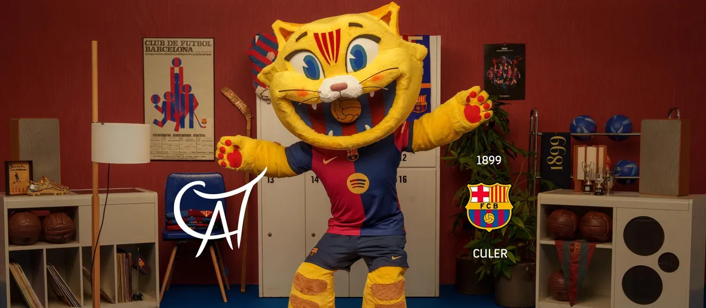

.svg.png)
The Barça family has a new member. It is the mascot CAT, a wildcat, a native feline from Catalonia that has all the most characteristic elements of Barça in its DNA. The mascot CAT is known for being an FC Barcelona fan, charismatic, innovative, a leader, demanding, creative and inclusive, traits that inspired the creative process. Presented at the gala at the Liceu held on 29 November 2024, the date of FC Barcelona’s anniversary, the mascot CAT does not have a defined gender, it is both female and male, thus becoming a modern symbol that represents its inclusive spirit, with a friendly and positive character. It is a cheerful cat, enthusiastic about both football and all the other sports that make FC Barcelona a multi-sport club, with both men’s and women’s professional and amateur teams. Creating the new Barça mascot for the 125th anniversary was a long and inspiring process led by the FC Barcelona Identity Department, which covers everything involved with the Barça brand, and which remained a constant to ensure that essence was in the final outcome. The Club worked alongside the renowned Grangel brothers from Grangel Studio to produce it. This creative hub founded by Jordi and Carlos Grangel is very close to the Spotify Camp Nou, and they have collaborated internationally with DreamWorks, Sony and Universal Pictures, among others, as well as creating major successes such as Madagascar, Kung Fu Panda and Pinocchio. Their tremendous career has seen them work with famous directors such as Guillermo del Toro, Steven Spielberg and Tim Burton.
